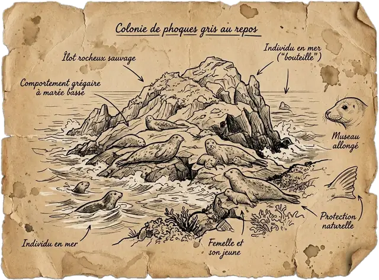
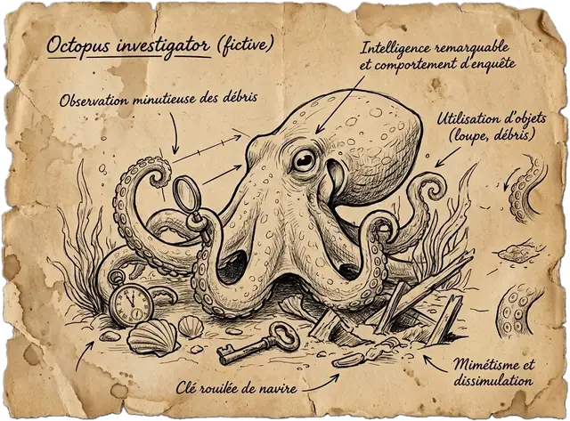

Re-identify me!
Laisse-moi te montrer pourquoi retirer ton nom ne suffit pas à te rendre anonyme.
Let me show you why removing your name isn't enough to make you anonymous.
Sur l'île de Kerdata vit une colonie de 2 000 phoques. Le soigneur les connaît tous. Dans son registre, il note pour chacun où il se repose, son âge, la couleur de son pelage… et même son petit secret.
On Kerdata Island lives a colony of 2,000 seals. The keeper knows every one of them. In his register he writes down where each one rests, its age, the colour of its coat… and even its little secret.
Il veut partager ce registre avec des scientifiques. Pour protéger ses phoques, il a enlevé tous les noms. « Comme ça, c'est anonyme », dit-il.
He wants to share this register with scientists. To protect his seals, he removed every name. "There, it's anonymous," he says.
Hmm. Je n'en suis pas si sûr. Aide-moi à vérifier !
Hmm. I'm not so sure. Help me check!

- Acte IAct IDevine quiGuess whoCombien d'indices pour reconnaître un phoque ?How many clues to recognise a seal?
- Acte IIAct IILe test du registreTesting the registerLe registre sans nom protège-t-il vraiment ?Does the nameless register really protect?
- Acte IIIAct IIIÀ toi de protégerYour turn to protectComment partager sans trahir personne ?How to share without betraying anyone?
- FinEndLe rapportThe reportCe qu'on a prouvé ensembleWhat we proved together
- RegistreRegister
- Un tableau. Chaque ligne est un phoque.A table. Each row is a seal.
- AttributAttribute
- Une information sur un phoque : son âge, son pelage…A piece of information about a seal: its age, its coat…
- Unique
- Le seul de la colonie à avoir cette combinaison d'attributs.The only one in the colony with this combination of attributes.
- AnonymeAnonymous
- Impossible de savoir de qui on parle, même en croisant avec d'autres infos.Impossible to tell who it is, even by cross-checking other information.
Les mots de l'enquêteInvestigation words
Devine quiGuess who
ObjectifGoalVoir qu'il suffit de quelques informations banales pour reconnaître un phoque, sans connaître son nom.See that a few ordinary pieces of information are enough to recognise a seal, without knowing its name.
Tu connais le Qui est-ce ? J'ai choisi un phoque en secret parmi ces 24. Une fiche, c'est un phoque dans le registre. Une question, c'est un attribut. Trouve-le en posant le moins de questions possible.
Know the game Guess Who? I secretly picked one seal among these 24. A card is a seal in the register. A question is an attribute. Find it with as few questions as possible.
- 1Pose une question.Ask a question.
- 2Les fiches qui ne collent pas s'effacent.Cards that don't match fade out.
- 3Quand tu as trouvé, clique sur la fiche.When you know, click the card.
Et avec toute la colonie ?And with the whole colony?
Avec 24 fiches, c'est facile. Mais la colonie compte 2 000 phoques. Posons les questions une à une, toujours dans le même ordre, et comptons les phoques qui deviennent uniques : ceux qu'on reconnaît à coup sûr si on connaît ces réponses.
With 24 cards it's easy. But the colony has 2,000 seals. Let's ask the questions one by one, always in the same order, and count the seals that become unique: the ones you can recognise for sure if you know these answers.
Sous chaque attribut, son équivalent chez les humains.Under each attribute, its human equivalent.
Ce n'est pas une information qui te trahit, c'est leur combinaison. Pas besoin de ton nom pour te reconnaître.
It isn't one piece of information that gives you away, it's the combination. Nobody needs your name to recognise you.
Le test du registreTesting the register
ObjectifGoalVérifier si le registre sans nom protège vraiment les phoques quand on le croise avec des informations publiques.Check whether the nameless register really protects the seals once it's cross-checked with public information.
Le soigneur a publié son registre. À la place des noms, il a mis des codes, comme KD-3F2A1 : on appelle ça des pseudonymes. Il pense que c'est anonyme. Moi, j'ai des doutes, alors on va le tester.
Prenons Gwen, la chouchoute du soigneur. Il poste régulièrement des photos d'elle sur les réseaux sociaux, et tout le monde peut les voir. La question : avec ces informations publiques, peut-on retrouver sa ligne dans le registre ?
The keeper published his register. Instead of names, he used codes like KD-3F2A1: these are called pseudonyms. He thinks it's anonymous. I have my doubts, so let's test it.
Take Gwen, the keeper's favourite. He regularly posts photos of her on social media, and anyone can see them. The question: with this public information, can we find her row in the register?
- 1Ajoute les indices un par un.Add the clues one by one.
- 2Regarde combien de lignes du registre correspondent encore.Watch how many register rows still match.
Ce qu'on sait de Gwen grâce aux réseaux sociaux (une source extérieure)What we know about Gwen from social media (an outside source)
Lignes du registre qui correspondentRegister rows that match
Remplacer le nom par un code, c'est pseudonymiser, pas anonymiser. Il suffit de croiser le registre avec une autre source pour retrouver quelqu'un.
Replacing a name with a code is pseudonymisation, not anonymisation. Cross-checking the register with another source is enough to find someone.
À toi de protégerYour turn to protect
ObjectifGoalTrouver un réglage qui protège tous les phoques tout en restant utile aux scientifiques.Find a setting that protects every seal while staying useful to scientists.
Changement de rôle : c'est toi le soigneur ! Tu dois publier le registre. On suppose qu'un curieux connaît, comme pour Gwen, ces six attributs d'un phoque. Pour chacun, tu peux le garder tel quel, le rendre plus flou, ou le cacher. Tu peux aussi retirer les phoques qui restent trop seuls. Les trois objectifs s'allument quand tu les remplis.
Switching roles: you're the keeper now! You must publish the register. Assume a snoop knows these six attributes of a seal, like with Gwen. For each one you can keep it, blur it, or hide it. You can also remove seals that remain too lonely. The three goals light up when you meet them.
Tes réglagesYour settings
Ce que ça donneWhat it gives
Les 3 questions des scientifiquesThe scientists' 3 questions
Leur réponse avec le vrai registre, et avec le registre que tu publies. Si c'est trop flou, ils ne peuvent plus répondre.
Their answer with the true register, and with the register you publish. Too blurry, and they can't answer anymore.
Bonus : et si on inventait une fausse colonie ?Bonus: what if we invented a fake colony?
Autre idée : au lieu de flouter le vrai registre, on fabrique une colonie imaginaire qui lui ressemble. Ce sont des données synthétiques. Notre générateur est volontairement simple : il tire chaque attribut au hasard, selon ce qu'on observe chez les mâles et chez les femelles.
Another idea: instead of blurring the real register, build an imaginary colony that looks like it. That's synthetic data. Our generator is deliberately simple: it draws each attribute at random, following what we see in males and in females.
Protéger des données, c'est toujours un compromis : plus c'est flou, moins c'est risqué, mais moins c'est utile. Le bon réglage dépend de l'usage, et il se mesure.
Protecting data is always a trade-off: the blurrier, the safer, but the less useful. The right setting depends on the use, and it can be measured.
Le rapport de l'inspecteur PoulpeInspector Octo's report
- AffaireCase
- Le registre « anonyme » de KerdataThe "anonymous" Kerdata register
- Question
- Enlever les noms suffit-il à rendre le registre anonyme ?Is removing the names enough to make the register anonymous?
- VerdictVerdict
- NonNo

Pour juger si des données sont vraiment anonymes, les autorités européennes de protection des données, réunies au sein du CEPD, posent trois questions (avis 05/2014 sur les techniques d'anonymisation). Des données anonymes doivent résister aux trois. Tu as trouvé une preuve pour chacune :To judge whether data is truly anonymous, European data protection authorities, gathered in the EDPB, ask three questions (Opinion 05/2014 on anonymisation techniques). Anonymous data must withstand all three. You found evidence for each one:
Remplace « phoque » par « patient », « lieu de repos » par « adresse » et « petit secret » par « maladie ». C'est exactement la même histoire. C'est pour ça que des données sans nom ne sont pas forcément anonymes, et que la loi continue de les protéger.
Replace "seal" with "patient", "resting spot" with "address" and "little secret" with "illness". It's exactly the same story. That's why data without names isn't necessarily anonymous, and why the law keeps protecting it.
Pour aller plus loinFurther reading
- 2019Rocher, Hendrickx & de Montjoye · Estimating the success of re-identifications in incomplete datasets using generative models · Nature Communications
- 2014CEPD (ex-G29) · Avis 05/2014 sur les techniques d'anonymisationEDPB (formerly WP29) · Opinion 05/2014 on Anonymisation Techniques
- 2008Narayanan & Shmatikov · Robust De-anonymization of Large Sparse Datasets
- 2000Sweeney · Simple Demographics Often Identify People Uniquely
- 2016RGPD · considérant 26 et article 4(5)GDPR · recital 26 and Article 4(5)
Sous le capotUnder the hood
La colonie est générée par un petit paquet Python, kerdata, testé et typé. Le code et le notebook sont sur GitHub.
The colony is generated by a small, tested and typed Python package, kerdata. Code and notebook are on GitHub.
# uv + just just setup # uv sync just report # courbe d'unicité / uniqueness curve just generate # web/data/kerdata.json just check # ruff · mypy · pytest